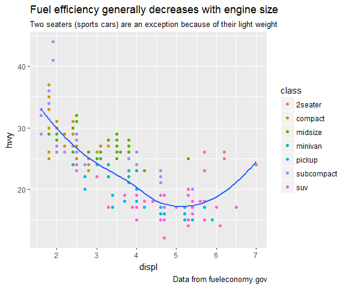

How to set up your own R blog with Github pages and Jekyll Bootstrap
This post is in reply to a request: How did I set up this R blog?
I have wanted to have my own R blog for a while before I actually went ahead and realised this page. I had seen all the cool things people do with R by following R-bloggers and reading their newsletter every day!
While I am using R every day at work, the thematic scope there is of course very bioinformatics-centric (with a little bit of Machine Learning and lots of visualization and statistics), I wanted to have an incentive to regularly explore other types of analyses and other types of data that I don’t normally work with. I have also very often benefited from other people’s published code in that it gave me ideas for my own work and I hope that sharing my own analyses will inspire others as much as I often am by what can be be done with data.
Moreover, since I’ve started my R blog, I’ve very much enjoyed interacting more with other R-bloggers and R users and getting valuable feedback. I definitely feel more part of the community now that I’m an active contributor!
In this post, I will describe how I go about publishing R code and its output to my blog. I will not go into detail on how to customize your page but only give a quick introduction to setting up a blog with Github pages and JekyllBoostrap. I will focus on how to write content with RMarkdown and RStudio.
Setting up Github pages
I decided to host my blog on Github pages because I was already used to working with Github (it’s where I store my exprAnalysis R package).
Setting up your own Github page is free and very easy! All you need is a Github account. On Github you need to create a new repository called “username.github.io”” (substitute username for your Github user name, in my case: ShirinG.github.io).
I set up the rest via the terminal interface:
- go to the folder where your repository should live (in this example called “Test”)
- clone the repository and change to its directory
- pull from Github to make sure everything is synchronized and up to date between your computer and Github
cd Home/Documents/Test
git clone https://github.com/username/username.github.io
cd username.github.io
git pull origin master
JekyllBoostrap
Github pages also supports Jekyll, an easy to use static site generator perfect for blogging. I set up my blog with JekyllBoostrap, a full blog scaffold for Jekyll based blogs. Follow their Quick Start Guide for instructions on how to install it.
It also gives detailed instructions on how to set up comments, analytics and permalinks.
Customizing your page
Most of the heavy-lifting has already been done for you with JekyllBootstrap but of course there are many options for customizing and adapting your blog’s layout to your liking.
The main file for customizing your page is Jekyll’s “*_config.yml*” file (check back with JekyllBoostrap for details). Here you need to fill it all the relevant information about your page, like title, author, etc.
If you know a little bit about JavaScript, CSS and HTML, you can also directly modify the style sheets in the directory “*_includes*”.
You can change your page’s theme by following this tutorial.
In your page repository’s main folder you have a markdown called “index”. This is your main page and is already set up to show a list of all your blog post.
You can have more pages in the navigation bar if you want, like an “About me”, etc. You simply need to create a new markdown with the respective content in your page repository’s main folder.
You will also automatically get .xml files with your blog’s RSS and Atom feeds.
Preparing R blog posts with RMarkdown
I am generally working in RStudio, so this is where I’m preparing all my blog posts. I’m writing my code in RMarkdown and produce html output files until I deem a blog post finished.
This is how an example Rmarkdown document could look like.
Your Rmarkdown will need a header with title, author, date and output information:
---
title: "This is a test post for my R blog"
author: "Dr. Shirin Glander"
date: '`r Sys.Date()`'
output: html_document
---
Below the header you can write text, insert pictures, create tables and much more. Code chunks will go in between brackets.
```{r, echo=TRUE}
summary(cars)
```
As always, there is much more information on how to work with RMarkdown on the webs.
The final code chunk will look something like this in the output:
library(ggplot2)
ggplot(mpg, aes(displ, hwy)) +
geom_point(aes(color = class)) +
geom_smooth(se = FALSE, method = "loess") +
labs(
title = "Fuel efficiency generally decreases with engine size",
subtitle = "Two seaters (sports cars) are an exception because of their light weight",
caption = "Data from fueleconomy.gov"
)

Once I’m happy with my finished blog post, I’m changing the output format in the YAML header to create a markdown file (I’m using markdown_github) and knit again.
output:
md_document:
variant: markdown_github
This will produce a markdown document (ending in .md) of your blog post. This markdown is now almost ready to be published but first you need to add a header in the markdown document to the top of your finished markdown for Jekyll to recognize. An example markdown header looks like this:
---
layout: post
title: "This is a test post for my R blog"
date: 2016-12-01
categories: rblogging
tags: test ggplot2
---
It needs to contain the layout definition for post, the title and date. Categories and tags are optional but I like using them to categorize the posts I have written and make them easier to find again.
Now this file is ready to go on your blog.
Publishing a blog post
I’m working in a different directory to produce my posts and test out things (in this example called “blog_prep”), so once I have my markdown file ready (in this example called “example_post.md”), I am going back to the terminal window and copy it to my blog repository’s folder “_post” and rename it so that it has the following format: Date-name.md (of course, you could also manually copy, paste and rename the file).
cp ../blog_prep/example_post.md _posts
mv _posts/example_post.md _posts/2016-11-20-example_post.md
If you also have figures or graphs in your blog post, there will be a folder generated along with your markdown with the name “example_post_files”. You need to copy this folder to your blog repository as well. If you gave your post a category, it will look for the files in a folder with the same name as your category with subfolders for the date. With the example above, which was categorized as “rblogging”, I will need to have/ make a folder with the same name and create subdirectories for the date on which my post is published:
mkdir -p rblogging/2016/12/01
cp ../blog_prep/example_post_files rblogging/2016/12/01
Testing your blog page locally
Before I push my updated blog to Github where it will go live, I’m testing the output locally with Jekyll. In order to be able to run Jekyll locally, you need to follow these excellent guidelines. Once you have Jekyll up and running, all you need to do is to be in your page repository and run jekyll serve.
bundle exec jekyll serve
This will build your page from the contents of your repository and you can preview whether everything looks the way you want it to.
If my new blog post looks okay and I don’t want to change anything any more, I can finally stage, commit and push the updated blog to Github.
git add *
git commit -m "name"
git push origin master
Alternatively, if you’d rather use RStudio for pushing changes to Github, you can also connect your blog repository to RStudio and stage, commit and push from there.
And voilà, your new R blog post is out there for the world to see!